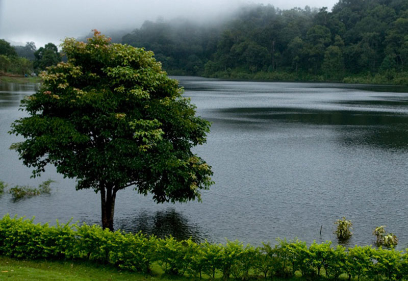
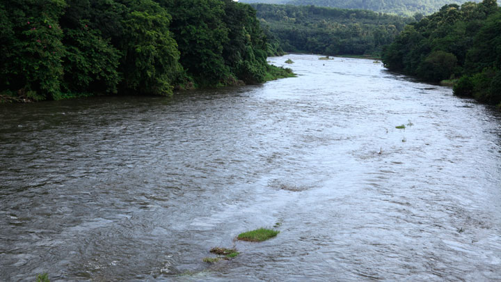

1. Gavi
Gavi is an Eco-Tourism a project of the Kerala Forest Development Corporation located in Pathanamthitta district, Kerala. Gavi, located in Pathanamthitta district offers its visitors activities like trekking, wildlife watching, outdoor camping in specially built tents, and night safaris.
Distance from Pathanamthitta To Gavi is 109 km 428 mtrs & Travel Time is 2 hour 5 mins By Road. Gavi is 14 km south west of Vandiperiyar, 28 km from Kumily, near Thekkady. Gavi is inside the Ranni reserve forest. Gavi is a part of Seethathode Panchayath in Ranni Taluk. Gavi is part of the Periyar Tiger Reserve, and the route can be covered by car from Vandiperiyar.
The entrance fee is 25 rupees per person and 50 rupees per vehicle. Cameras are 25 rupees and video cameras are charged 100 rupees. Both day and night stays are available. Forest tent camping is available from November through March.[citation needed]. It has been said that most enjoyable route to Gavi is the way from Pathanamthitta. The rough journey to Gavi may better be made on a sturdy vehicle like a jeep. Entry passes must be obtained from the Forest Check Post en route at Vallakkadavu. Advance booking with the Kerala Forest Development Corporation Ltd. is highly appreciable wherein such formalities will be taken care of by the company itself.

2.Perunthenaruvi Water falls
A natural fall, down a rocky path into a ravine about 100 feet deep is the Perunthenaruvi Waterfalls. It is during monsoons that one can truly appreciate the roaring waters of Perunthenaruvi falls. The name of the place translates to ‘great honey stream’ and it has turned into a famous picnic spot in Pathanamthitta district. Distance from the nearest railway station – Thiruvalla is about 44 km.

3. Aranmula
Aranmula is a little temple town in Pathanamthitta District, surrounded by undulating green hillocks and girdled by the holy river Pampa. The temple here is dedicated to Lord Krishna.Aranmula is also famous for its metal mirrors made of bell meta which is known as ‘Aranmula Kannadi’. This is a unique art which is not found any where else in the world . It is believed that a divine visitation inspired a window of this village to discover a mysterious blend of bronze which could be waxed bright in to crystal clear mirror.
Aranmula kannadi
The town is also famous for the Aranmula Vallamkali (Boat Race), which is held on the annual commemoration of the week long Onam festival. The exciting event begins in the afternoon, each snake boat is thirty feet long containing four helmsman, hundred rowers and twenty five singers. Vasthuvidya Gurukulam is a unique institution for ancient Indian architecture and mural paintings. It is a school constituted by the state Cultural Department is situated at Aranmula, 16 km away from Pathanamthitta town. The main objective of the gurukulam is the preservation and promotion of vasthuvidya and mural paintings.

4. Konni and Adavi
A hill town, Konni is famous for timber trade and wild elephant training centre.
This is a charming town with lush meadows and hills stands on the bank of river Achakovil.
It is surrounded by clove and pepper plantations. Elephants trapped from the forest area are also tamed here. Konni with a vast expanse of lush green forests is the eco-tourism hub of Pathanamthitta district, which has a project with elephants at its nerve centre. An elephant kraal (shelter), a photo gallery, modern elephant shelters, an elephant museum, shops to sell forest produce, a children’s park, a biogas plant and a paper-making unit are part of the project, offering vivid experiences to the visitors.
adavi boating
A picturesque forest patch, 10 km from Konni on the banks of river Kallar, Adavi has nearly 5-km river frontage. The Adavi Eco-tourism project jointly launched by the departments of Forest and Tourism is part of the third phase of Konni Eco tourism project and is just five km from Mundommoozhy on the proposed Achencoil-Chittar hill highway.

5.Pampa River
The Pamba River is the longest river in the Indian state of Kerala after Periyar and Bharathappuzha, and the longest river in the erstwhile former princely state of Travancore.
Sabarimala temple dedicated to Lord Ayyappa is located on the banks of the river Pamba. The river is also known as 'Dakshina Bhageerathi'.
Cherukolpuzha Convention is an important religious convention of the Hindus held at Cherukole on the sand banks of a river Pamba, usually in February every year. Started in 1896, the Maramon Convention is also held on the banks of river Pamba at Maramon near Kozhencherry in Pathanamthitta District. It is the largest Christian convention in Asia.